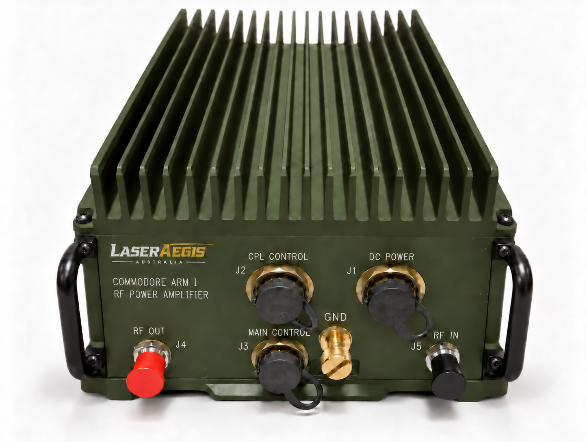

Automatic control
Control from the receiver-transmitter, with amplifier and antenna coupler status monitored through the control cable.
HF/VHF RF power amplifier
Extend the output of a low-power receiver-transmitter across 1.6–59.99999 MHz. ARM I delivers up to 150 W PEP/average in HF and up to 60 W in VHF into a 50 Ω load.

Control & protection
Control from the receiver-transmitter, with amplifier and antenna coupler status monitored through the control cable.
Overvoltage shutdown, current limiting, an over-temperature transmit inhibit, receiver input overload protection and a high-VSWR warning help manage operating faults.
Built-in harmonic filters support RF output performance across the operating range.
Key specifications
Electrical values at +28 V DC, 25 °C and a 50 Ω load, unless stated otherwise.
| Parameter | Specification |
|---|---|
| Operating frequency | 1.6–59.99999 MHz |
| HF output · 1.6–29.99999 MHz | Up to 150 W PEP / average |
| VHF output · 30–59.99999 MHz | Up to 60 W PEP / average |
| RF input drive | 100 mW (+20 dBm) |
| DC supply | 22.5–30 V DC; nominal 28 V DC (per MIL-STD-1275) |
| Current consumption at rated output | 20 A maximum |
| Intermodulation distortion at rated PEP | −25 dBc maximum |
| Harmonics at rated output | −45 dBc maximum |
| Parameter | Specification |
|---|---|
| Weight (amplifier only) | 14.84 kg (32.7 lb) |
| Cooling | Internal fan; 106 CFM airflow required. Heat dissipation to air: 395 W |
| Operating case temperature | −40 °C to +70 °C |
| Relative humidity | 0 to 95%, non-condensing |
Contact our engineering team to confirm connector types, pin-outs, installation and cooling for your application.
Discuss your application
Tell us your operating band, required output power and receiver-transmitter interface. Include supply, cooling or installation constraints so we can assess the application and provide the relevant technical information.